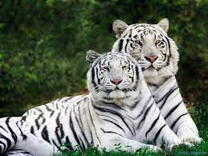

ANIMALES EN PELIGRO DE EXTINCION
El primer grupo de animales en peligro de extincion fue sobre aves, invertebrados marinos, peces continentales y marinos; plantas criptógamas, reptiles y un primer volumen de plantas fanerógamas y anfibios. También existe el libro sobre hongos, invertebrados terrestres, mamíferos y de plantas fanerógamas, en preparación.

Esto nos da a enteder que no solo son animales los que se estan extingiendo, hay platas he inclusibe hongos que estan entrando en este trible problema.
Es una clara señal que no es solo ploblema de la casa sin medida o la pezca sino tambien es la contaminacion de los suelos lo que esta haciendo que las plantas comienzen a extinguirse.
- TORTUGAS VERDES MARINAS
- MANATIES
- MANTARALLAS
- TIBURON BLANCO
- TIBURON MARTILLO
- BALLENA AZUL
- PEZ VELA
- ATUN AZUL GIGANTE

Y muchos mas animales marion son los que estan en peligro de extincion, por factores que afectan en su medio natural, la pesca execiba de estos ejemplares tambien es un inmenzo problema, ya que la poblacion disminulle a un ritmo alarmante y por eso su reproduccion se ve afectada por falta de ejemplares, otro factor que influye en esto, es la contaminacion en el oceano, esto provoca que las especies tengan que migrar a lugares que no son apropiados para su supervivencia.